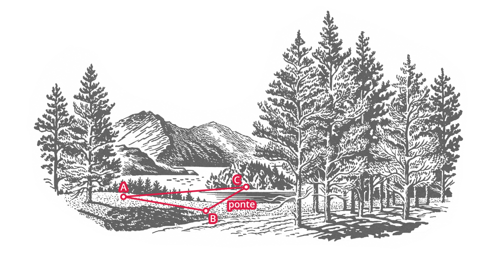

UM ESTUDO SOBRE OS TRIÂNGULOS:
Teorema de Pitágoras, Lei dos senos e cossenos.
O que é o Teorema de Pitágoras?
O Teorema de Pitágoras é uma expressão matemática que consegue relacionar todos os lados de um triângulo retângulo (catetos e hipotenusa). Lembramos que esse teorema não é válido para os triângulos obtusângulo e acutângulo. Todo triângulo retângulo possui um ângulo de reto, ou seja, um ângulo de 90º. O lado oposto ao ângulo reto é chamado de hipotenusa e os demais lados catetos. Outra característica importante a ser mencionar é que a hipotenusa é o maior lado neste tipo de triângulo.
O Teorema de Pitágoras pode ser expresso da seguinte forma: o quadrado da hipotenusa é igual à soma dos quadrados dos catetos. Na forma algébrica, essa expressão fica da seguinte forma: \(h^2=a^2+b^2\) , onde \(h\) é a hipotenusa e \(a\) e \(b\) são os catetos.
Clique aqui e veja a demonstração do Teorema passo a passo no Geogebra.
TEOREMA DE PITÁGORAS
O quadrado da hipotenusa é igual á soma dos quadrados dos catetos
PITÁGORAS
h2 = a2 + b2

$$ (b+a)^2 = \frac{4ba}{2} + h^2 $$
$$ b^2 + 2ba + a^2 = 2ba + h^2 $$
$$ b^2 + a^2 = h^2 $$
O que é a Lei dos Cossenos?
A Lei dos cossenos é uma relação trigonométrica usada para relacionar lados e ângulos de um triângulo qualquer, isto é, aquele triângulo que não possui, necessariamente, um ângulo reto, ou seja, os triângulos acutângulos e obtusângulos. Podemos dizer que essa lei nada mais é do que uma espécie de teorema de Pitágoras, mas que serve para qualquer triangulo.
A lei dos cossenos é indicada para calcular a medida dos lados e os ângulos de um triângulo, a partir de alguns valores apresentados. Essa lei pode ser expressada da seguinte maneira:
Lei dos cossenos: “o quadrado de um dos lados do triângulo é igual à soma dos quadrados dos outros dois lados, menos o dobro do produto desses dois lados pelo cosseno do ângulo formado entre eles”
De forma algébrica, podemos expressar essa lei das seguintes formas:
$$a^2=b^2+c^2−2. b. c. \cos(\theta)$$
$$a^2=b^2+c^2−2. b. c. \cos(\beta)$$
$$b^2=a^2+c^2−2. a. c. \cos(\beta)$$
Clique aqui e veja a demonstração da lei dos cossenos passo a passo no Geogebra.
Exemplo do uso da lei dos cossenos
José tem um sítio em Jundiai e utiliza em sua casa a água que é captada do Rio Capivari que passa por dentro de sua propriedade. Para utilizar essa água, ele utiliza uma bomba que leva a água do rio para sua caixa d’água na distância de 100 metros.
A casa de José se encontra a 160 metros de distância da caixa d’água, e o ângulo formado pelas direções caixa d’água - bomba e caixa d’água - casa é de \(60^{\circ}\).
Se José pretender fazer uma ligação da bomba d’água direto para sua casa, quantos metros de encanamento são necessários?
Esquema da situação:
Resolução:
$$a^2= 100^2+ 160^2 −2.100.160.cos(60^{\circ})$$
$$a^2= 10000 + 25600 −2.100.160.\frac{1}{2}$$
$$a^2= 19600$$
$$a^2= \sqrt{19600}$$
$$a=140 \space \text{metros}$$
O que é a lei dos senos?
A lei dos senos, ou também conhecida como Teorema dos senos é uma relação de proporção em qualquer triangulo inscrito em uma circunferência de raio r. Essa lei indica que a relação entre a medida do lado de um triângulo e o seno do ângulo oposto a esse lado será sempre constante. Vale ressaltar que essa lei só é válida para triângulos que não possui ângulo reto. A lei dos senos é representada pela seguinte fórmula:
$$ \frac{a}{sen(A)} + \frac{b}{sen(B)} + \frac{c}{sen(C)}$$
A lei do seno utiliza relações que envolvem o seno do ângulo e a medida oposta ao ângulo.
Clique aqui e veja a demonstração da lei dos senos passo a passo no Geogebra.
Exemplo do uso da lei dos senos
Um grupo de engenheiros construirá uma ponte ligando dois lados separados pelo Rio Macaé na cidade de Macaé (Região baixada litorânea do Estado do Rio de Janeiro).
A essa ponte daremos o nome de \(XY\). Do ponto \(Z\) a \(Y\) têm a distância de 100 metros e ângulo formado por \(XZY\) é igual a \(45^{\circ}\) e do ponto \(Z\), foi medido o ângulo \(ZXY\) igual a \(30^{\circ}\).
Aplicando a Lei dos Senos, qual será o tamanho da ponte a ser construída pelos engenheiros? (Considere que \(\sqrt{2} = 1,4142\))
Esquema da situação:
Resolução:
$$ \frac{XY}{sen(45^{\circ})} = \frac{100}{sen(30^{\circ})}$$
$$ XY . sen(30^{\circ}) = 100 . sen(45^{\circ}) $$
$$ XY . \frac{1}{2} = 100 . \frac{\sqrt{2}}{2} $$
$$ XY = 100 . \sqrt{2} $$
$$ XY = 141,42$$
Atividades
Indicamos a seguir algumas atividades para você consolidar suas aprendizagens.
Atividade 1
Lei de senos e lei de cossenos
O tiro com arco consiste em utilizar um arco e flechas para atingir um alvo. Esta atividade foi introduzida nos Jogos Olímpicos modernos em 1900, sendo disputado até 1920. A discrepância entre as regras aplicadas nos diferentes países fez com que a modalidade ficasse ausente do evento por várias décadas. A partir de 1972, com a adoção das regras da Federação Internacional de Tiro com Arco, (FITA), o tiro com arco voltou à condição de esporte olímpico1. Uma competidora tem três tentativas \(A\), \(B\) e \(C\) (ver Figura de alvo de 80 cm para tiro a 18 m com arco reto).
a) Determine as distâncias entre os pontos \(A\), \(B\) e \(C\), em centímetros.
b) Suponha que a competidora precisa refazer o tiro \(B\). Altere a posição do ponto \(B\) e determine as novas distâncias entre os pontos \(A\), \(B\) e \(C\), em centímetros. Nota. Existe mais de uma resposta.
Nota. Utilize as leis de senos, cossenos ou tangentes na resolução

| d | x | y | z |
|---|---|---|---|
| Diâmetro do alvo | Zona colorida | Zona de pontuação | Diâmetro do 10 Interno |
| 122cm | 12,2cm | 6,1cm | 6,1cm |
| 80cm | 8cm | 4cm | 4cm |
Figura 1 - dimensões do alvo para tiro com arco.
Pergunta a)
Utilizando Lei de cossenoss
$$ BC^2 = AB^2 + AC^2 - 2.AB.AC.\cos(\widehat{BAC}) $$
$$ BC^2 = 28^2 + 36^2 - 2.28.36.\cos(135^{\circ}) $$
$$ BC = 59,21cm $$
Pergunta b)
Na figura:
$$ \widehat{ABC} = 180^o - 90^o - 45^o = 45^o $$
Utilizando Lei de senos
$$ \frac{AB}{sen(\widehat{BCA})} = \frac{AC}{sen(\widehat{ABC})} = \frac{BC}{sen(\widehat{BAC})} $$
$$ \frac{28}{sen(\widehat{BCA})} = \frac{36}{sen(45^{\circ})} $$
$$ \widehat{BCA} = 33,37^{\circ}$$
$$ \widehat{BAC} = 180^{\circ} - 45^{\circ} -33,37^{\circ} = 101,63^{\circ}$$
$$ \frac{28}{sen(33,37^{\circ})} = \frac{BC}{sen(101,63^{\circ})}$$
$$ BC = 26,89cm $$
Atividade 2
Lei de senos e lei de cossenos
Um estudante de engenharia deseja propor a construção de uma ponte sobre o Rio Tamanduateí (ver Figura 2), na Região Central de São Paulo, para facilitar a entrada e saída de carga do Mercado Municipal. Ele precisa entregar as medições aproximadas, mas não possui ferramentas para medir todas as distâncias mostradas na Figura 3.
Ele marcou um ponto B, calculou o ângulo \(\widehat{BAC}\) que foi igual a \(56^{\circ}\), caminhou até o ponto B, uma distância de 60 m, e calculou o ângulo \(\widehat{ABC}\) obtendo um ângulo de 47°.
a) Calcule o comprimento da ponte.
b) Proponha outra alternativa para a construção da ponte enlaçando as ruas Comendador Assad Abdallah e Praça São Vito (figura 3).
Nota. Utilize as leis de senos, cossenos ou tangentes na resolução.
Pergunta a)
1. Na figura
$$ \widehat{BCA} = 180^{\circ} - 56^{\circ} - 47^{\circ} = 77^{\circ}$$
2. Lei de senos
$$ \frac{AB}{sen(\widehat{BCA})} = \frac{AC}{sen(\widehat{ABC})} = \frac{BC}{sen(\widehat{BAC})}$$
Pergunta b)
1. Lei de cossenos
\(AC^2 = CB^2 + AB^2 - 2 . CB. AB . cos(\widehat{CBA})\)
Atividade 3
Lei dos cossenos
Mateus está no ponto C e deseja visitar dois amigos que moram nos pontos A e B. Sabendo que \(\alpha=36^{\circ}\), \(AC = 70\text{km}\) e \(BC = 60\text{km}\), determine a melhor estratégia para encontrar a distância entre os pontos \(A\) e \(B\), de maneira que Mateus siga pelo menor caminho.
a) Lei dos Senos
b) Teorema de Pitágoras
c) Lei dos Cossenos
d) Lei das Tangentes
Item (c)
A ideia geral da atividade é que após a leitura do material, possa ser entendido que esta é uma aplicação da Lei dos cossenos.
Após aplicar a Lei dos cossenos através da fórmula
$$(AB)^2 = (AC)^2 + (BC)^2 - 2 \times (AC) \times (BC) \times cos \alpha $$
$$(AB)^2 = 70^2 + 60^2 - 2 \times 70 \times 60 \times cos36^{\circ} $$
$$(AB)^2 = 4900 + 3600 - 8400 \times 0.8$$
$$(AB)^2 = 1780$$
$$\text{Temos: }AB = 42.19km$$
Atividade 4
Hoje somos estagiários/as da engenheira civil Andressa. Andressa está construindo uma escada para seu próximo projeto.
Para os cálculos ela está usando a fórmula de Blondel:
$$(2E+P=64cm)$$
onde \(E\) é o tamanho do espelho (altura do degrau) e \(P\) é o tamanho do piso (largura do degrau).
A fórmula de Blondel é usada visando o conforto para pessoas que sobem e descem a escada.
Como especificações do projeto, \(P = 30cm\) e a altura entre os andares que a escada ficará é \(A = 300cm\) (3mts).
Seguindo as orientações da engenheira Andressa faça os seguintes cálculos:
- Obtenha o tamanho E dos espelhos da escada pela fórmula de Blondel \(2E+P=64cm\).
- Sabendo que a altura entre os andares é \(A=300cm\), calcule o número de espelhos \(NE=\frac{A}{E}\).
- Com o número de espelhos NE, obtenha o número de pisos da escada \(NP=NE-1\).
- Para saber o tamanho horizontal D (em cm) que a escada ocupará, faça a conta \(D = NP \times 30\).
- Para finalizar nossa escada, use o Teorema de Pitágoras para obter o tamanho da hipotenusa H (em cm) do triangulo retângulo formado pela escada.
Vamos seguir os passos descritos na atividade:
- Usando a fórmula de Blondel (\(2E+P=64cm\)) com \(P = 30cm\), temos \(2E+30=64cm\), isto é, \(2E=34cm\). Ou seja, \(E=17cm\).
-
Sabendo que o número de espelhos são dados pela fórmula \(\left( NE=\frac{A}{E} \right)\), substituindo \(A=300cm\) e \(E=17cm\), obtemos \(NE=\frac{300}{17}=17.64\).
Como o número de espelhos deve ser um número inteiro, um truque que a engenheira Andressa nos diz é o seguinte: Vamos escolher \(E=17.64cm\), de maneira que os espaços dos degraus sejam igualmente espaçados, e \(NE=17\).
Assim não mudaremos muito o conforto da escada pois \(2E+P= 65.28cm\).
- Sendo o número de pisos da escada \((NP=NE-1)\), e \(NE=17\), então \(NP=16\).
- Seguindo o raciocínio, \(D = NP\times 30=16 \times 30=480\text{cm}=4.8\text{mts}\) é o tamanho horizontal que a escada ocupará.
- Pelo teorema de Pitágoras, \(H^2=480^2+300^2=320400\), ou seja, por aproximação \(H=566cm=5.66\text{mts}\).